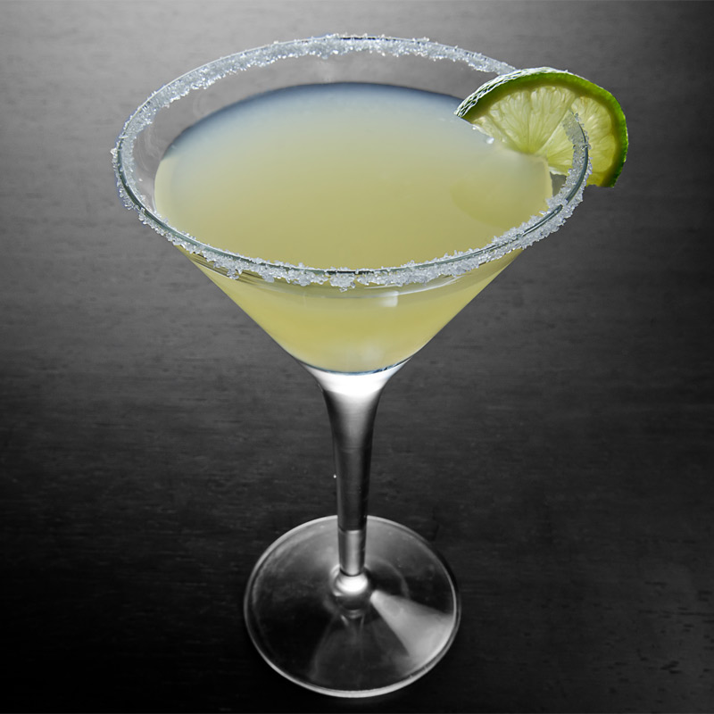

Margarita

Total Time:
5 min
Prep:
5 min
Difficulty: Easy
Ingredients
* Ice cubes
* 3 ounces tequila
* 2 ounces freshly squeezed lime juice
* 1 ounce Simple Syrup, recipe follows
* 1/2 to 1 teaspoon orange liqueur
* 1 tablespoon Lime-salt-sugar, recipe follows
* 1 cup sugar
* 1 cup water
* Zest of one lime
* 2 tablespoons kosher salt
* 2 tablespoons sugar
Instruction
Fill a cocktail shaker with ice. Add tequila, lime juice, Simple Syrup and orange liqueur. Cover and shake until mixed and chilled, about 30 seconds.
Place Lime-salt-sugar on a plate. Press the rim of a chilled rocks or wine glass into the mixture to rim the edge. Strain margarita into the glass.
Simple Syrup:
Put the sugar and water in a small saucepan. Cook over low heat, stirring, until the sugar dissolves. (Alternatively, heat in the microwave.)
Store in a sealed container in the refrigerator for up to 1 month.
Yield: about 1 1/2 cups
Lime-salt-sugar:
Blend together lime, salt and sugar in a small blender or mini food chopper.